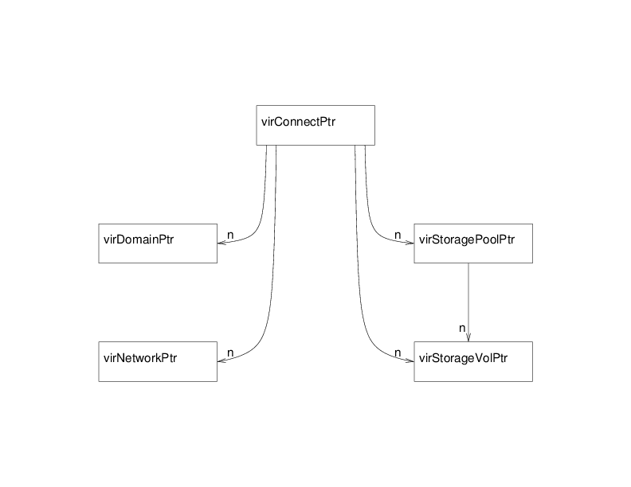
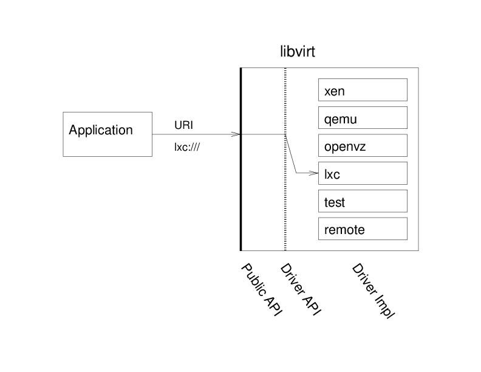
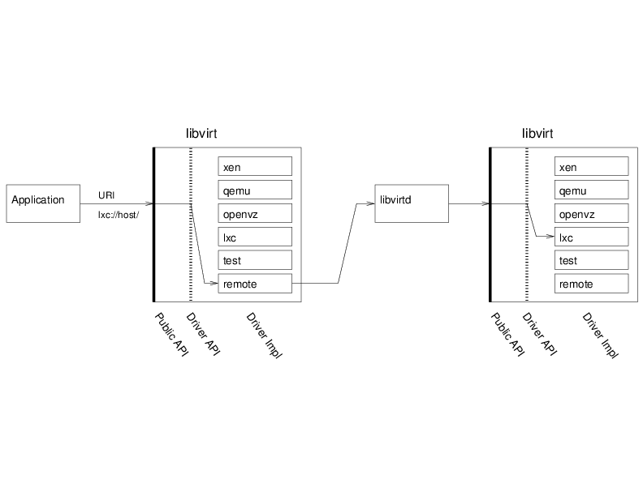

This page describes the main principles and architecture choices behind the definition of the libvirt API:
Contents
As defined in the goals section, the libvirt API is designed to expose all the resources needed to manage the virtualization support of recent operating systems. The first object manipulated through the API is the virConnectPtr, which represents the connection to a hypervisor. Any application using libvirt is likely to start using the API by calling one of the virConnectOpen functions. You will note that those functions take a name argument which is actually a connection URI to select the right hypervisor to open. A URI is needed to allow remote connections and also select between different possible hypervisors. For example, on a Linux system it may be possible to use both KVM and LinuxContainers on the same node. A NULL name will default to a preselected hypervisor, but it's probably not a wise thing to do in most cases. See the connection URI page for a full descriptions of the values allowed.
OnDevice the application obtains a virConnectPtr connection to the hypervisor it can then use it to manage the hypervisor's available domains and related virtualization resources, such as storage and networking. All those are exposed as first class objects and connected to the hypervisor connection (and the node or cluster where it is available).

The figure above shows the five main objects exported by the API:
Represents the connection to a hypervisor. Use one of the virConnectOpen functions to obtain connection to the hypervisor which is then used as a parameter to other connection API's.
Represents one domain either active or defined (i.e. existing as permanent config file and storage but not currently running on that node). The function virConnectListAllDomains lists all the domains for the hypervisor.
Represents one network either active or defined (i.e. existing as permanent config file and storage but not currently activated). The function virConnectListAllNetworks lists all the virtualization networks for the hypervisor.
Represents one storage volume generally used as a block device available to one of the domains. The function virStorageVolLookupByPath finds the storage volume object based on its path on the node.
Represents a storage pool, which is a logical area used to allocate and store storage volumes. The function virConnectListAllStoragePools lists all of the virtualization storage pools on the hypervisor. The function virStoragePoolLookupByVolume finds the storage pool containing a given storage volume.
Most objects manipulated by the library can also be represented using XML descriptions. This is used primarily to create those object, but is also helpful to modify or save their description back.
Domains, networks, and storage pools can be either active i.e. either running or available for immediate use, or defined in which case they are inactive but there is a permanent definition available in the system for them. Based on this they can be activated dynamically in order to be used.
Most objects can also be named in various ways:
name
A user friendly identifier but whose uniqueness cannot be guaranteed between two nodes.
ID
A runtime unique identifier provided by the hypervisor for one given activation of the object; however, it becomes invalid once the resource is deactivated.
UUID
A 16 byte unique identifier as defined in RFC 4122, which is guaranteed to be unique for long term usage and across a set of nodes.
The naming of the functions present in the library is usually composed by a prefix describing the object associated to the function and a verb describing the action on that object.
For each first class object you will find APIs for the following actions:
Lookup [...LookupBy...]
Used to perform lookups on objects by some type of identifier, such as:
Enumeration [virConnectList..., virConnectNumOf...]
Used to enumerate a set of object available to a given hypervisor connection such as:
Description [...GetInfo]
Generic accessor providing a set of generic information about an object, such as:
Accessors [...Get..., ...Set...]
Specific accessors used to query or modify data for the given object, such as:
Creation [...Create, ...CreateXML]
Used to create and start objects. The ...CreateXML APIs will create the object based on an XML description, while the ...Create APIs will create the object based on existing object pointer, such as:
Destruction [...Destroy]
Used to shutdown or deactivate and destroy objects, such as:
Note: functions returning vir*Ptr (like the virDomainLookup functions) allocate memory which needs to be freed by the caller by the corresponding vir*Free function (e.g. virDomainFree for a virDomainPtr object).
For more in-depth details of the storage related APIs see the storage management page.
Drivers are the basic building block for libvirt functionality to support the capability to handle specific hypervisor driver calls. Drivers are discovered and registered during connection processing as part of the virInitialize API. Each driver has a registration API which loads up the driver specific function references for the libvirt APIs to call. The following is a simplistic view of the hypervisor driver mechanism. Consider the stacked list of drivers as a series of modules that can be plugged into the architecture depending on how libvirt is configured to be built.

The driver architecture is also used to support other virtualization components such as storage, storage pools, host device, networking, network interfaces, and network filters.
See the libvirt drivers page for more information on hypervisor and storage specific drivers.
Not all drivers support every virtualization function possible. The libvirt API support matrix lists the various functions and support found in each driver by the version support was added into libvirt.
Access to libvirt drivers is primarily handled by the libvirtd daemon through the remote driver via an RPC. Some hypervisors do support client-side connections and responses, such as Test, OpenVZ, VMware, VirtualBox (vbox), ESX, Hyper-V, Xen, and Virtuozzo. The libvirtd daemon service is started on the host at system boot time and can also be restarted at any time by a properly privileged user, such as root. The libvirtd daemon uses the same libvirt API virInitialize sequence as applications for client-side driver registrations, but then extends the registered driver list to encompass all known drivers supported for all driver types supported on the host.
The libvirt client applications use a URI to obtain the virConnectPtr. The virConnectPtr keeps track of the driver connection plus a variety of other connections (network, interface, storage, etc.). The virConnectPtr is then used as a parameter to other virtualization functions (see Functions and Naming Conventions). Depending upon the driver being used, calls will be routed through the remote driver to the libvirtd daemon. The daemon will reference the connection specific driver in order to retrieve the requested information and then pass back status and/or data through the connection back to the application. The application can then decide what to do with that data, such as display, write log data, etc. Migration is an example of many facets of the architecture in use.

The key takeaway from the above diagram is that there is a remote driver which handles transactions for a majority of the drivers. The libvirtd daemon running on the host will receive transaction requests from the remote driver and will then query the hypervisor driver as specified in the virConnectPtr in order to fetch the data. The data will then be returned through the remote driver to the client application for processing.
If you are interested in contributing to libvirt, read the FAQ and hacking guidelines to gain an understanding of basic rules and guidelines. In order to add new API functionality follow the instructions regarding implementing a new API in libvirt.